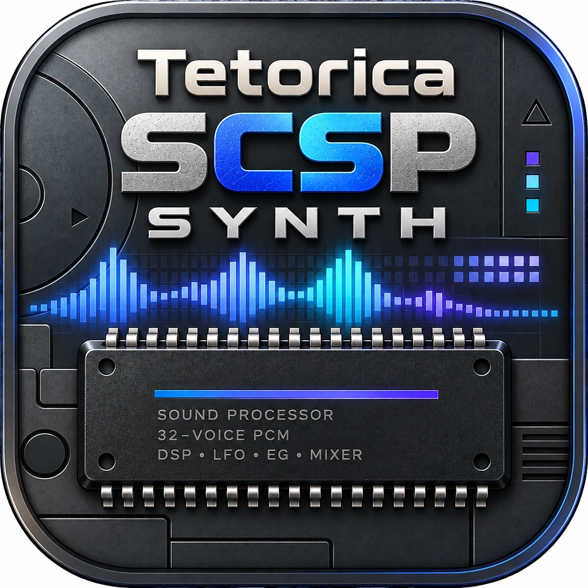

SEGA SATURN · PCM · SLOT FM
Tetorica SCSP Synth
Shape a waveform. Play with code.
Enable audio or Run Code to play. Files save locally.
?
Import an SSF folder to include each song's SSFLib dependencies. Files retains the original songs and libraries. SCSP VGM / VGZ contains recorded register writes and sound RAM. The Demo is a self-authored register log.
Import an SSF folder or SCSP VGM from Menu, or try Demo.
?
Inspect the physical SCSP slot at the audible song position. Pause keeps one snapshot for all 32 slots. The PCM preview reads a short prefix at the programmed sample start. Envelope, LFO, mix and modulation show hardware values. Live is read-only. While paused, the keyboard auditions the selected slot through a separate Synth voice without changing the song. Reference key maps its current playback rate to that key; the original sample root is unknown. Capture to Synth copies supported PCM, loop, Envelope, LFO and mix into an editable instrument. Pause / Resume is preserved. Slot modulation and the song's DSP are not copied.
Waiting for SSF playback.
Live output after Master volume.
Sound source
26 PCM / 13 two-op / 6 four-op / 4 six-op voices?
Mode and Connection changes release existing notes. All modulator ratios sets A to 1 and B–F to the selected value. PCM uses A. Fixed FM connections and voice allocation are software tools over SCSP slot modulation.
Operators A
Output · A
DSP programming · Under construction
Assembler and microprogram editing are planned.
Experimental · fixed mono Delay
One fixed six-step program runs in the SCSP DSP. Release a short note to hear repeats. Time and Enable changes clear echoes. The DSP reserves 64 KiB, leaving 448 KiB for PCM and guards.
Open DSP LabSoftware performance · the same SCSP and operator patch as the controls above. Run with Ctrl/Cmd+Enter. Apply with Ctrl/Cmd+Shift+Enter.
Code is saved in Files. Loading a project requires Run to start it.
Console
?
Use const scsp = await useSoundChip("scsp"),
then its methods. Code notes use the current PCM or complete
2 / 4 / 6-operator patch. CH1–CH6 identify Code voices.
Physical SCSP slots are allocated for each group. Operator
editing uses A–F indices 0–5. Keyboard and controls can
operate during Code. Run starts fresh, Apply retains context
and named loops, and Stop releases Code notes.